HTTP协议是Hyper Text Transfer Protocol（超文本传输协议）的缩写,是用于从万维网（WWW:World Wide Web ）服务器传输超文本到本地浏览器的传送协议。
HTTP是一个基于TCP/IP通信协议来传递数据（HTML 文件, 图片文件, 查询结果等）。
HTTP协议的主要特点可概括如下：
1.支持客户/服务器模式。
2.简单快速：客户向服务器请求服务时，只需传送请求方法和路径。请求方法常用的有GET、HEAD、POST。每种方法规定了客户与服务器联系的类型不同。由于HTTP协议简单，使得HTTP服务器的程序规模小，因而通信速度很快。
3.灵活：HTTP允许传输任意类型的数据对象。正在传输的类型由Content-Type加以标记。
4.无连接：无连接的含义是限制每次连接只处理一个请求。服务器处理完客户的请求，并收到客户的应答后，即断开连接。采用这种方式可以节省传输时间。
5.无状态：HTTP协议是无状态协议。无状态是指协议对于事务处理没有记忆能力。缺少状态意味着如果后续处理需要前面的信息，则它必须重传，这样可能导致每次连接传送的数据量增大。另一方面，在服务器不需要先前信息时它的应答就较快。
HTTP协议和TCP/IP协议族内的其他众多的协议相同，用于客户端和服务器之间的通信。请求访问文本或图像等资源的一端称为客户端，而提供资源响应的一端称为服务器端。
下面我们来看一个具体的示例：
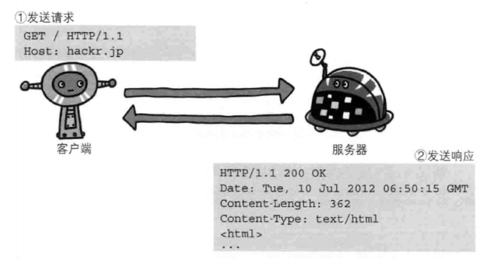
请求报文：
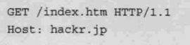
起始行开头的GET表示请求访问服务器的类型，称为方法（method）。随后的字符串/index.htm指明了请求访问的资源对象，也叫做请求URI（request-URI）。最后的HTTP/1.1，即HTTP的版本号，用来提示客户端使用的HTTP协议功能。
综合来看，这段请求内容的意思是：请求访问某台HTTP服务器上的/index.htm页面资源。
请求报文是由请求方法、请求URI、协议版本、可选的请求首部字段和内容实体构成的。
响应报文：
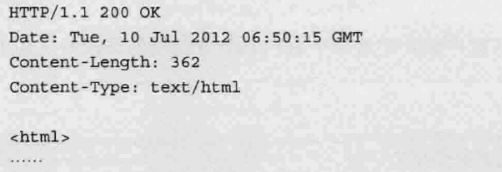
在起始行开头的HTTP/1.1表示服务器对应的HTTP版本。
紧挨着的200OK表示请求的处理结果的状态码（status code）和原因短语（reason-phrase）。下一行显示了创建响应的日期时间，是首部字段（header field）内的一个属性。
接着以一空行分隔，之后的内容称为资源实体的主体（entity body）。
响应报文基本上由协议版本、状态码（表示请求成功或失败的数字代码）、用以解释状态码的原因短语、可选的响应首部字段以及实体主体构成。
GET：获取资源
GET方法用来请求访问已被URI识别的资源。指定的资源经服务器端解析后返回响应内容。也就是说，如果请求的资源是文本，那就保持原样返回；如果是像CGI（Common Gateway Interface，通用网关接口）那样的程序，则返回经过执行后的输出结果。
POST：传输实体主体
POST方法用来传输实体的主体。虽然用GET方法也可以传输实体的主体，但一般不用GET方法进行传输，而是用POST方法。虽说POST的功能与GET很相似，但POST的主要目的并不是获取响应的主体内容。
PUT：传输文件
PUT方法用来传输文件。就像FTP协议的文件上传一样，要求在请求报文的主体中包含文件内容，然后保存到请求URI指定的位置。
HEAD：获得报文首部
HEAD方法和GET方法一样，只是不返回报文主体部分。用于确认URI的有效性及资源更新的日期时间等。
DELETE：删除文件
DELETE方法用来删除文件，是与PUT相反的方法。DELETE方法按请求URI删除指定的资源。
CONNECT：要求用隧道协议连接代理
CONNECT方法要求在与代理服务器通信时建立隧道，实现用隧道协议进行TCP通信。主要使用SSL（Secure Sockets Layer，安全套接层）和TLS（Transport Layer Security，传输层安全）协议把通信内容加密后经网络隧道传输。
上面列举了一下常见的方法，HTTP协议支持的方法入下图所示：
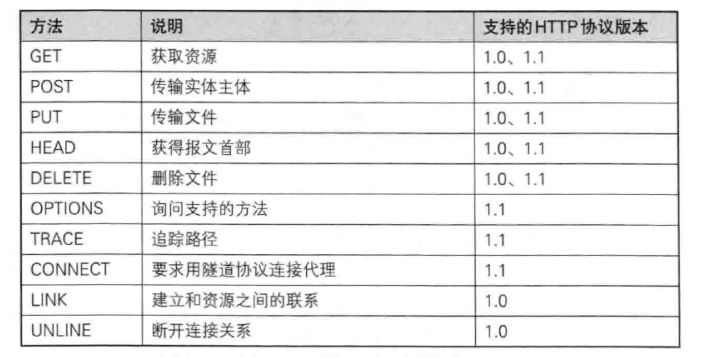
用于HTTP协议交互的信息被称为HTTP报文。请求端（客户端）的HTTP报文叫做请求报文，响应端（服务器端）的叫做响应报文。HTTP报文本身是由多行（用CR+LF作换行符）数据构成的字符串文本。
HTTP报文大致可分为报文首部和报文主体两块。两者由最初出现的空行（CR+LF）来划分。通常，并不一定要有报文主体。
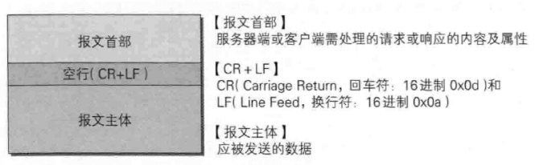
请求报文结构：
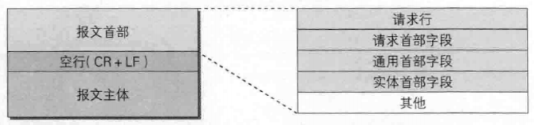
响应报文结构：
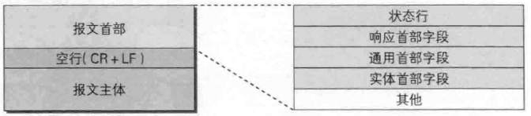
请求行：包含用于请求的方法，请求URI和HTTP版本
状态行：包含表明响应结果的状态码，原因短语和HTTP版本
首部字段：包含表示请求和响应的各种条件和属性的各类首部
其他：可能包含HTTP的RFC里未定义的首部（Cookie等）
状态码的职责是当客户端向服务器端发送请求时，描述返回的请求结果。借助状态码，用户可以知道服务器端是正常处理了请求，还是出现了错误。
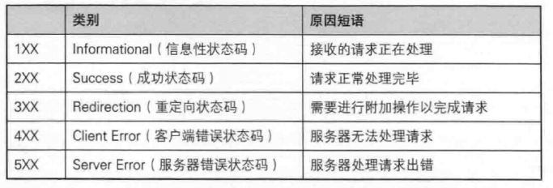
200 OK：表示从客户端发来的请求在服务器端被正常处理了。
204 NO Content：该状态码代表服务器接收的请求已成功处理，但在返回的响应报文中不含实体的主体部分。另外，也不允许返回任何实体的主体。比如，当从浏览器发出请求处理后，返回204响应，那么浏览器显示的页面不发生更新。
206 Parial Content：该状态码表示客户端进行了范围请求，而服务器成功执行了这部分的GET请求。响应报文中包含由Content-Range指定范围的实体内容。
301 Moved Permanently：永久性重定向。该状态码表示请求的资源已被分配了新的URI，以后应使用资源现在所指的URI。也就是说，如果已经把资源对应的URI保存为书签了，这时应该按Location首部字段提示的URI重新保存。
302 Found：临时性重定向。该状态码表示请求的资源已被分配了新的URI，希望用户（本次）能使用新的URI访问。
303 See Other：该状态码表示由于请求对应的资源存在着另一个URI，应使用GET方法定向获取请求的资源。
304 Not Modified：该状态码表示客户端发送附带条件的请求”时，服务器端允许请求访问资源，但未满足条件的情况。304状态码返回时，不包含任何响应的主体部分。304虽然被划分在3XX类别中，但是和重定向没有关系。
307 Temporary Redirect：临时重定向。该状态码与302Found有着相同的含义。尽管302标准禁止POST变换成GET，但实际使用时大家并不遵守。
400 Bad Request：该状态码表示请求报文中存在语法错误。当错误发生时，需修改请求的内容后再次发送请求。另外，浏览器会像2000K一样对待该状态码。
401 Unauthorized：该状态码表示发送的请求需要有通过HTTP认证（BASIC认证、DIGEST认证）的认证信息。另外若之前已进行过1次请求，则表示用户认证失败。
403 Forbidden：该状态码表明对请求资源的访问被服务器拒绝了。服务器端没有必要给出拒绝的详细理由，但如果想作说明的话，可以在实体的主体部分对原因进行描述，这样就能让用户看到了。
404 Not Found：该状态码表明服务器上无法找到请求的资源。除此之外，也可以在服务器端拒绝请求且不想说明理由时使用。
500 Internal Server Error：该状态码表明服务器端在执行请求时发生了错误。也有可能是Web应用存在的bug或某些临时的故障。
503 Service Unavailable：该状态码表明服务器暂时处于超负载或正在进行停机维护，现在无法处理请求。如果事先得知解除以上状况需要的时间，最好写入Retry-After首部字段再返回给客户端。
HTTP首部字段是构成HTTP报文的要素之一。在客户端与服务器之间以HTTP协议进行通信的过程中，无论是请求还是响应都会使用首部字段，它能起到传递额外重要信息的作用。
使用首部字段是为了给浏览器和服务器提供报文主体大小、所使用的语言、认证信息等内容。
HTTP首部字段是由首部字段名和字段值构成的，中间用冒号“：”分隔，如 Content-Type: text/html
通用首部字段：
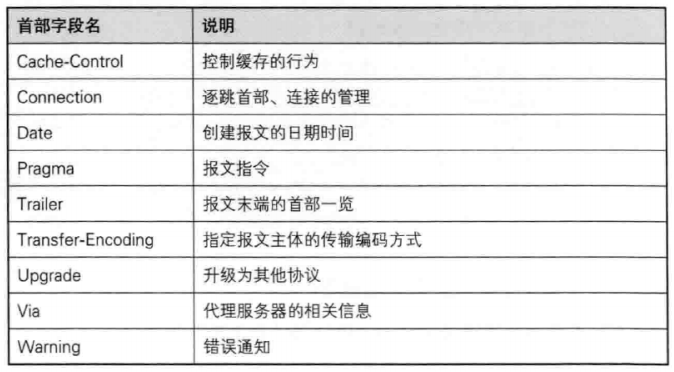
请求首部字段：
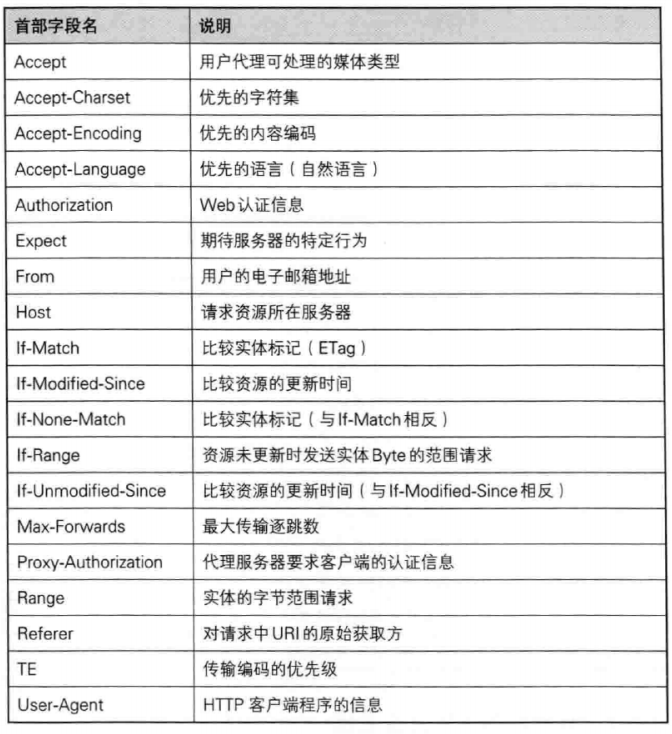
响应首部字段：
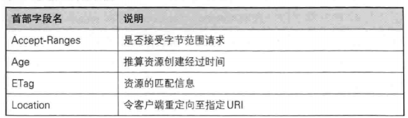
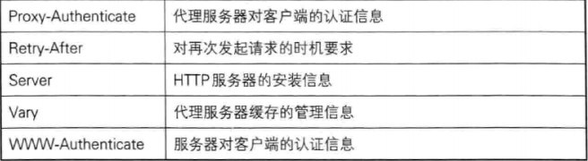
实体首部字段：
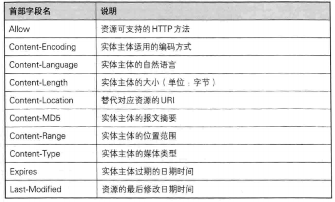
1、Cache-Control：通过指定首部字段Cache-Control的指令，就能操作缓存的工作机制。
2、Connction：控制不再转发给代理的首部字段；管理持久连接。
3、Date：首部Date字段表明创建HTTP报文的日期和时间。
4、Trailer：首部字段Trailer会事先说明在报文主体后记录了哪些首部字段。该首部字段可应用在HTTP/1.1版本分块传输编码时。
5、Transfer-Encoding：首部字段Transfer-Encoding规定了传输报文主体时采用的编码方式。
6、Upgrade：首部字段Upgrade用于检测HTTP协议及其他协议是否可使用更高的版本进行通信，其参数值可以用来指定一个完全不同的通信协议。
7、Via：使用首部字段Via是为了追踪客户端与服务器之间的请求和响应报文的传输路径。
1、Accept：Accept首部字段可通知服务器，用户代理能够处理的媒体类型及媒体类型的相对优先级。可使用type/subtype这种形式，一次指定多种媒体类型。
2、Accept-Charset：Accept-Charset首部字段可用来通知服务器用户代理支持的字符集及字符集的相对优先顺序。另外，可一次性指定多种字符集。与首部字段Accept相同的是可用权重q值来表示相对优先级。
3、Accept-Encoding：Accept-Encoding首部字段用来告知服务器用户代理支持的内容编码及内容编码的优先级顺序。可一次性指定多种内容编码。
4、Accept-Language：首部字段Accept-Language用来告知服务器用户代理能够处理的自然语言集（指中文或英文等），以及自然语言集的相对优先级。可一次指定多种自然语言集。
5、Authorization：首部字段Authorization是用来告知服务器，用户代理的认证信息（证书值）。通常，想要通过服务器认证的用户代理会在接收到返回的401状态码响应后，把首部字段Authorization加入请求中。共用缓存在接收到含有Authorization首部字段的请求时的操作处理会略有差异。
6、Except：客户端使用首部字段Expect来告知服务器，期望出现的某种特定行为。因服务器无法理解客户端的期望作出回应而发生错误时，会返回状态码417Expectation Failed。
7、From：首部字段From用来告知服务器使用用户代理的用户的电子邮件地址。通常，其使用目的就是为了显示搜索引擎等用户代理的负责人的电子邮件联系方式。使用代理时，应尽可能包含From首部字段（但可能会因代理不同，将电子邮件地址记录在User-Agent首部字段内）。
8、Host：首部字段Host会告知服务器，请求的资源所处的互联网主机名和端口号。Host首部字段在HTTP/1.1规范内是唯一一个必须被包含在请求内的首部字段。
9、User-Agent：首部字段User-Agent会将创建请求的浏览器和用户代理名称等信息传达给服务器。
1、Accept-Ranges：首部字段Accept-Ranges是用来告知客户端服务器是否能处理范围请求，以指定获取服务器端某个部分的资源。
2、Age：首部字段Age能告知客户端，源服务器在多久前创建了响应。字段值的单位为秒。
3、Location：使用首部字段Location可以将响应接收方引导至某个与请求URI位置不同的资源。
4、Proxy-Authenticate：首部字段Proxy-Authenticate会把由代理服务器所要求的认证信息发送给客户端。
5、Server：首部字段Server告知客户端当前服务器上安装的HTTP服务器应用程序的信息。不单单会标出服务器上的软件应用名称，还有可能包括版本号和安装时启用的可选项。
6、Vary：首部字段Vary可对缓存进行控制。源服务器会向代理服务器传达关于本地缓存使用方法的命令。
1、Allow：首部字段Allow用于通知客户端能够支持Request-URI指定资源的所有HTTP方法。当服务器接收到不支持的HTTP方法时，会以状态码405 Method Not Allowed作为响应返回。
2、Content-Encoding：首部字段Content-Encoding会告知客户端服务器对实体的主体部分选用的内容编码方式。内容编码是指在不丢失实体信息的前提下所进行的压缩。
3、Content-Language：使用的语言。
4、Content-Length：首部字段Content-Length表明了实体主体部分的大小（单位是字节）。
5、Content-Location：首部字段Content-Location给出与报文主体部分相对应的URI。和首部字段Location不同，Content-Location表示的是报文主体返回资源对应的URI。
6、Content-Range：针对范围请求，返回响应时使用的首部字段Content-Range，能告知客户端作为响应返回的实体的哪个部分符合范围请求。字段值以字节为单位，表示当前发送部分及整个实体大小。
7、Content-Type：首部字段Content-Type说明了实体主体内对象的媒体类型。和首部字段Accept一样，字段值用type/subtype形式赋值。
如果在HTTP协议通信过程中使用未经加密的明文，比如在Web页面中输入信用卡号，如果这条通信线路遭到窃听，那么信用卡号就暴露了。
另外，对于HTTP来说，服务器也好，客户端也好，都是没有办法确认通信方的。因为很有可能并不是和原本预想的通信方在实际通信。并且还需要考虑到接收到的报文在通信途中已经遭到篡改这一可能性。
为了统一解决上述这些问题，需要在HTTP上再加入加密处理和认证等机制。我们把添加了加密及认证机制的HTTP称为HTTPS（HTTP Secure）。
HTTPS并非是应用层的一种新协议。只是HTTP通信接口部分用SSL（Secure Socket Layer）和TLS（Transport Layer Security）协议代替而已。
通常，HTTP直接和TCP通信。当使用SSL时，则演变成先和SSL通信，再由SSL和TCP通信了。简言之，所谓HTTPS，其实就是身披SSL协议这层外壳的HTTP。在采用SSL后，HTTP就拥有了HTTPS的加密、证书和完整性保护这些功能。
共享密钥加密：
加密和解密同用一个密钥的方式称为共享密钥加密（Common key crypto system），也被叫做对称密钥加密。
共享密钥加密是不安全的，因为只要攻击者拿到了密钥，就可以进行破解。
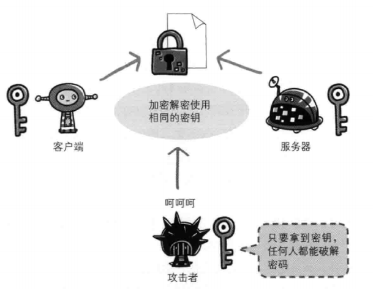
公开密钥加密：
公开密钥加密方式很好地解决了共享密钥加密的困难。
公开密钥加密使用一对非对称的密钥。一把叫做私有密钥（private key），另一把叫做公开密钥（public key）。顾名思义，私有密钥不能让其他任何人知道，而公开密钥则可以随意发布，任何人都可以获得。使用公开密钥加密方式，发送密文的一方使用对方的公开密钥进行加密处理，对方收到被加密的信息后，再使用自己的私有密钥进行解密。利用这种方式，不需要发送用来解密的私有密钥，也不必担心密钥被攻击者窃听而盗走。
另外，要想根据密文和公开密钥，恢复到信息原文是异常困难的，因为解密过程就是在对离散对数进行求值，这并非轻而易举就能办到。退一步讲，如果能对一个非常大的整数做到快速地因式分解，那么密码破解还是存在希望的。但就目前的技术来看是不太现实的。
HTTPS采用共享密钥加密和公开密钥加密两者并用的混合加密机制。若密钥能够实现安全交换，那么有可能会考虑仅使用公开密钥加密来通信。但是公开密钥加密与共享密钥加密相比，其处理速度要慢。所以应充分利用两者各自的优势，将多种方法组合起来用于通信。
在交换密钥环节使用公开密钥加密方式，之后的建立通信交换报文阶段则使用共享密钥加密方式。
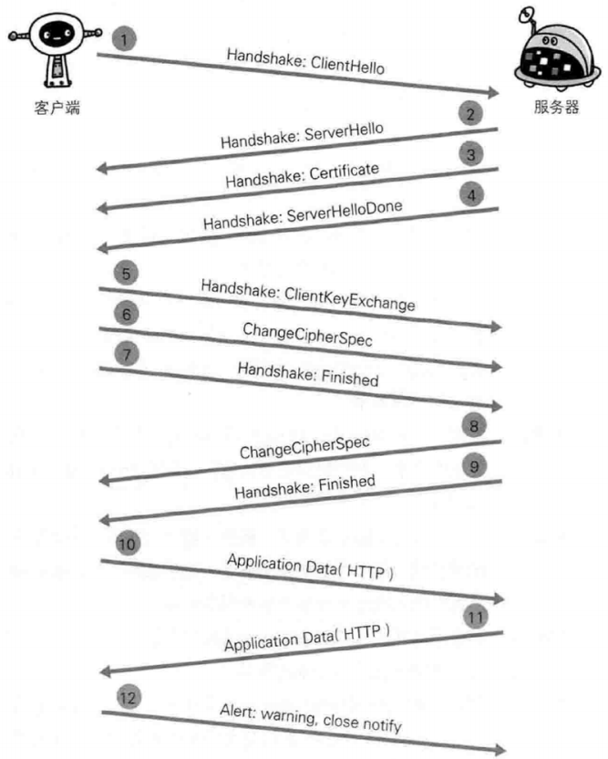
步骤1：客户端通过发送Client Hello报文开始SSL通信。报文中包含客户端支持的SSL的指定版本、加密组件（Cipher Suite）列表（所使用的加密算法及密钥长度等）。
步骤2：服务器可进行SSL通信时，会以Server Hello报文作为应答。和客户端一样，在报文中包含SSL版本以及加密组件。服务器的加密组件内容是从接收到的客户端加密组件内筛选出来的。
步骤3：之后服务器发送Certificate报文。报文中包含公开密钥证书。
步骤4：最后服务器发送Server Hello Done报文通知客户端，最初阶段的SSL握手协商部分结束。
步骤5：SSL第一次握手结束之后，客户端以Client Key Exchange报文作为回应。报文中包含通信加密中使用的一种被称为Pre-master secret的随机密码串。该报文已用步骤3中的公开密钥进行加密。
步骤6：接着客户端继续发送Change Cipher Spec报文。该报文会提示服务器，在此报文之后的通信会采用Pre-master secret密钥加密。
步骤7：客户端发送Finished报文。该报文包含连接至今全部报文的整体校验值。这次握手协商是否能够成功，要以服务器是否能够正确解密该报文作为判定标准。
步骤8：服务器同样发送Change Cipher Spec报文。
步骤9：服务器同样发送Finished报文。
步骤10：服务器和客户端的Finished报文交换完毕之后，SSL连接就算建立完成。当然，通信会受到SSL的保护。从此处开始进行应用层协议的通信，即发送HTTP请求。步骤11：应用层协议通信，即发送HTTP响应。
步骤12：最后由客户端断开连接。断开连接时，发送close_notify。
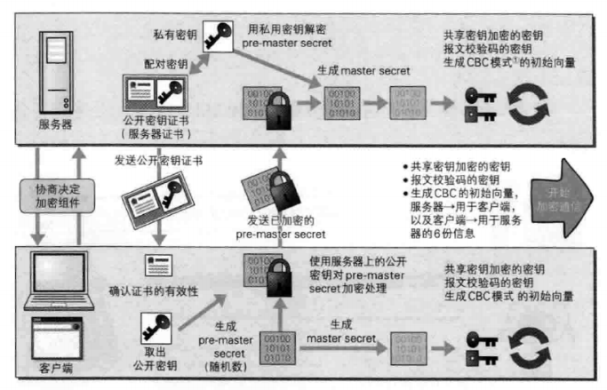
以服务器为目标的主动攻击：
主动攻击（active attack）是指攻击者通过直接访问Web应用，把攻击代码传人的攻击模式。由于该模式是直接针对服务器上的资源进行攻击，因此攻击者需要能够访问到那些资源。
主动攻击模式里具有代表性的攻击是SQL注入攻击和OS命令注入攻击。
以服务器为目标的被动攻击：
被动攻击（passive attack）是指利用圈套策略执行攻击代码的攻击模式。在被动攻击过程中，攻击者不直接对目标Web应用访问发起攻击。
xss就是攻击者在web页面插入恶意的Script代码，当用户浏览该页之时，嵌入其中web里面的Script代码会被执行，从而达到恶意攻击用户的特殊目的。
例如：
<select>
<script>
document.write("<OPTION value=1>"+document.location.href.substring(document.location.href.indexOf("default=")+8)+"</OPTION>");
document.write("<OPTION value=2>English</OPTION>");
</script>
</select>
SQL注入（SQLInjection）是指针对Web应用使用的数据库，通过运行非法的SQL而产生的攻击。该安全隐患有可能引发极大的威胁，有时会直接导致个人信息及机密信息的泄露。Web应用通常都会用到数据库，当需要对数据库表内的数据进行检索或添加、删除等操作时，会使用SQL语句连接数据库进行特定的操作。如果在调用SQL语句的方式上存在疏漏，就有可能执行被恶意注入（Injection）非法SQL语句。
OS命令注入攻击（OSCommand Injection）是指通过Web应用，执行非法的操作系统命令达到攻击的目的。只要在能调用Shell函数的地方就有存在被攻击的风险。OS命令注入攻击可以向Shell发送命令，让Windows或Linux操作系统的命令行启动程序。也就是说，通过OS注入攻击可执行OS上安装着的各种程序。
邮件首部注入（Mail Header Injection）是指Web应用中的邮件发送功能，攻击者通过向邮件首部To或Subject内任意添加非法内容发起的攻击。利用存在安全漏洞的Web网站，可对任意邮件地址发送广告邮件或病毒邮件。